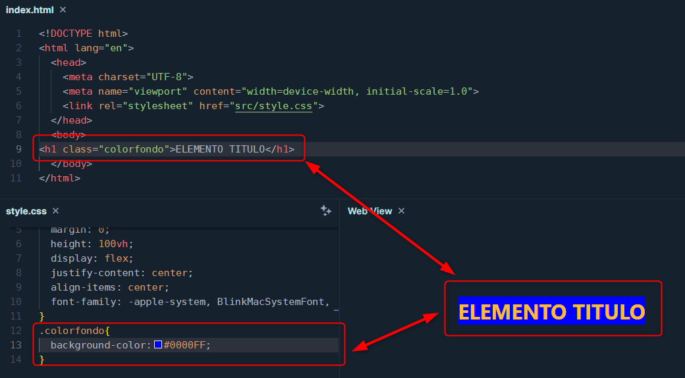

Las propiedades de caja son propiedades dentro de cada selector del elemento, que permiten variar otras propiedades del
diseño como color, margenes bordes, sombras, etc
La propiedad background-color en CSS se utiliza para establecer el color de fondo de un elemento HTML. Es una forma sencilla
de aplicar color a la parte "detrás" del contenido, rellenando el área dentro del borde del elemento, incluidos los espacios
de margen y relleno si están definidos.
Aunque en este caso se usa directamente la palabra "blue" para el valor, se puede usar el código hexadecimal
o RGB. Las pantallas se componen de píxeles, cada píxel es como un pequeño, muy pequeño, pequeñísimo
LED (light emitter diode), es decir, un diodo emisor de luz. Resulta que hay materiales semiconductores de
electricidad que, cuando hacemos pasar corriente eléctrica a través de ellos, son capaces de emitir luz. De aquí
nacen los diodos, pero eso no es todo; además, según el tipo de material semiconductor, puedes obtener diferentes
colores, como el verde (GREEN), el rojo (RED), y el azul (BLUE). De allí las siglas RGB. Esto lo aprovecharon los
electrónicos, ya que mezclando esos tres colores se pueden generar los demás, y así es como funcionan nuestros
monitores, pantallas de computadores, tablets, y celulares.
Tambien se usa el codigo hexadecimal es algo similar como solo que se usan 2 numeros tomados del sistema hexadecimal
para cada color
recordemos que en este sistema no existen numeros de dos cifras y los que ocupan estas dos cifras son reemplazados por letras:
1,2,3,4,5,6,7,8,9,A,B,C,D,E,F.
cada uno de los pares de numeros hexadecimales representan cada cada color RGB, y se representan iniciando con #
entonces seria:
